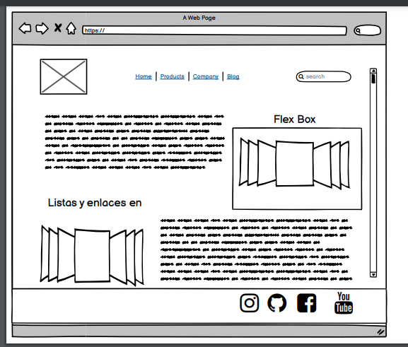

Conceptos de Flex Box Listas y enlaces en HT,ML
Propósito del sitio
Dar un vistaso al metodo de diseño deuna pagina unidimencional para
conaginar elementos en filas y columnas.
Conocer los diferentes usos de las listas en html
y como se pueden emplear en una pagina
Imagen
Conceptos Básicos de flexbox
El Módulo de Caja Flexible, comúnmente llamado flexbox, fue diseñado como un modelo unidimensional
de
layout,
y como un método que pueda ayudar a distribuir el espacio entre los ítems de una interfaz y mejorar
las
capacidades
de alineación. Este artículo hace un repaso de las principales características de flexbox, las que
exploraremos con
mayor detalle en el resto de estas guías.
Cuando describimos a flexbox como unidimensional
destacamos el hecho que flexbox maneja el layout en una sola dimensión a la vez ya sea como fila o
como
columna.
Esto contrasta con el modelo bidimensional del Grid Layout de CSS, el cual controla columnas y filas
a
la
vez.?
Los dos ejes de flexbox
Cuando trabajamos con flexbox necesitamos pensar en términos de dos ejes el eje principal y el eje
cruzado.
El eje principal está definido por la propiedad flex-direction,
y el eje cruzado es perpendicular a este.
Todo lo que hacemos con flexbox está referido a estos dos ejes, por lo que vale la pena entender
cómo
trabajan desde el principio.
El eje principal
El eje principal está definido por flex-direction, que posee cuatro posibles valores:
1.row
2. row-reverse
3.column
4. column-reverse
Si elegimos row o row-reverse, el eje principal correrá a lo largo de la fila según la dirección de
la
línea
Listas HTML
Las listas en HTML nos permite crear conjuntos de elementos en forma de lista dentro de una página,
todos los cuales irán precedidos, generalmente, por un guión o número.
Los tipos de listas en HTML son los siguientes:
Listas ordenadas
Listas desordenadas
Listas de definiciones
Listas Ordenadas
Las listas en HTML ordenadas son aquellas que nos muestran
los elementos de la lista en orden. Para representar el orden tendremos
los elementos numerados. Es decir, cada uno de los elementos irá precedido
de un número o letra que establezca su orden.
Las listas en HTML ordenadas se representan mediante el elemento OL.
- Elemento 1
- Elemento 2
- Elemento N
- Julio
- Carmen
- Ignacio
- Elena